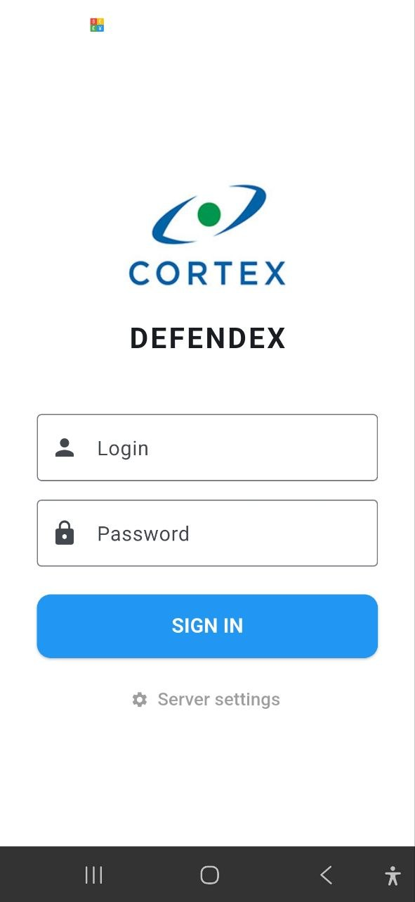
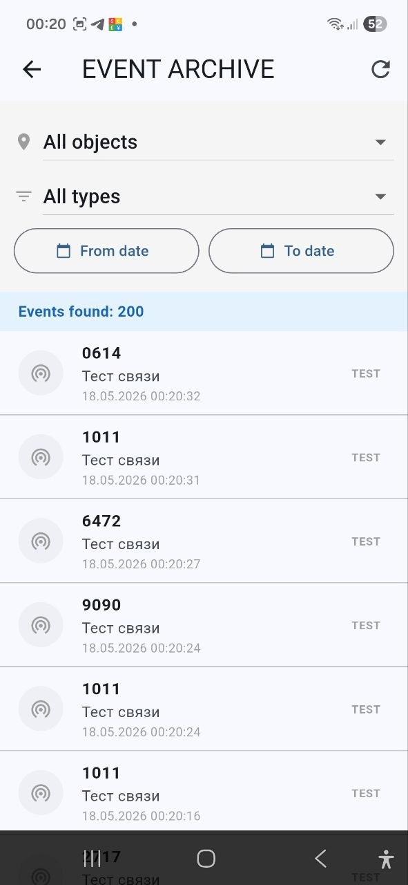
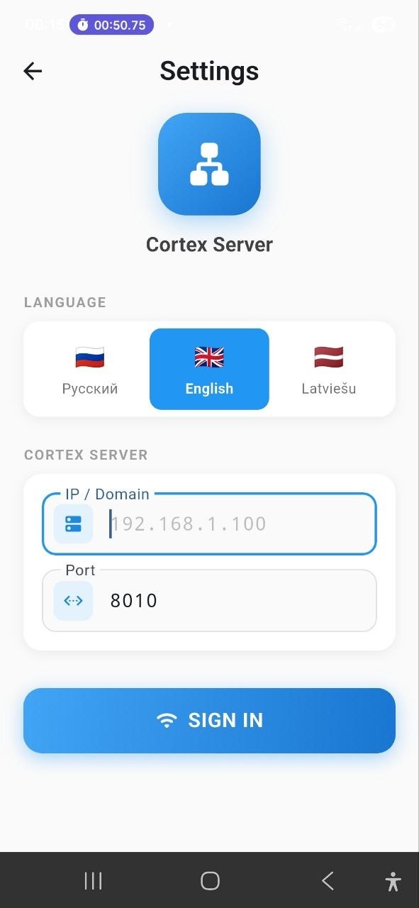
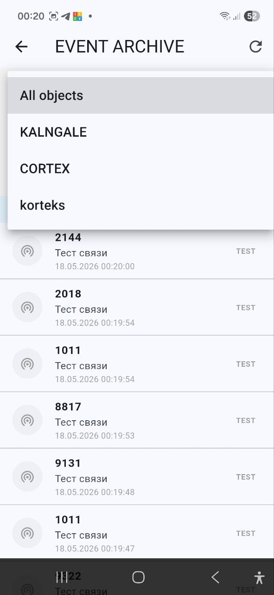
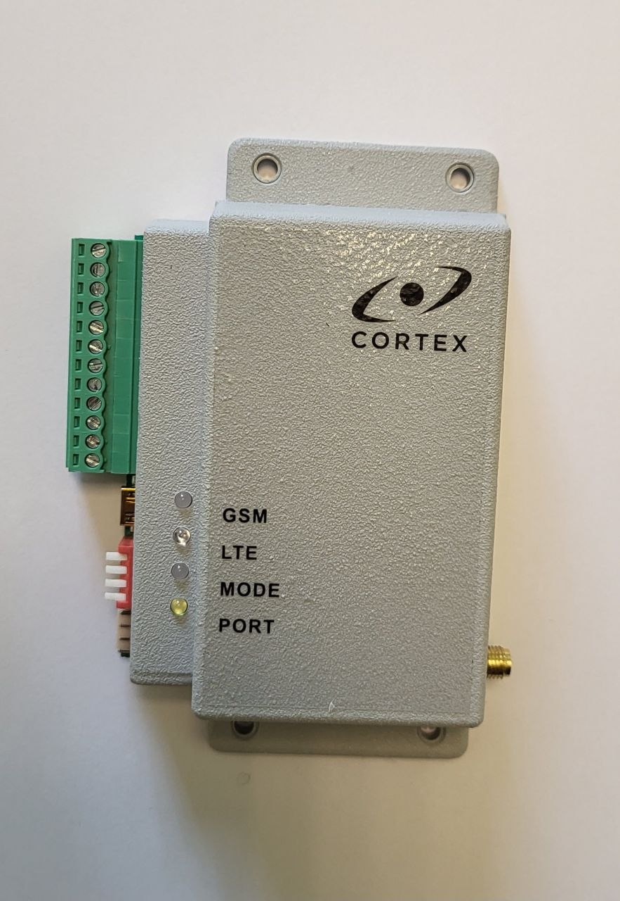
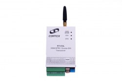

Apsardzes monitorings tavā kabatā — objektu statuss, vadība un trauksmes reāllaikā. Jebkur. Jebkurā laikā.

Tradicionālā apsardze atstāj īpašnieku neziņā: signāls aiziet uz pulti, bet kas notiek ar objektu — nav redzams.
Īpašnieks nezina, vai objekts ir apsargāts, noņemts vai trauksmē.
Par trauksmi uzzina vēlu — tikai pēc zvana no apsardzes pults.
Notikumi nav pieejami īpašniekam — nav atskaišu un caurspīdīguma.
CORTEX iekārta, mākoņa serveris un lietotne strādā kopā: no signāla objektā līdz paziņojumam telefonā — reāllaikā.
Statuss, vadība un trauksmes objektu īpašniekam.
Apstrādā notikumus un sinhronizē statusu reāllaikā.
GSM/UHF raidītāji, ražoti Latvijā kopš 1992.
WebSocket atjauninājumi un push paziņojumi.
Objekti · Arhīvs · Iestatījumi — tīrs, ātrs interfeiss latviešu, krievu un angļu valodā.



Katrs notikums — ar laiku, objektu un tipu. Filtrē un atrodi vajadzīgo dažās sekundēs.
HLS straumēšana ar zemu aizturi, atskaņotājs hls.js — natīvi arī iOS. Skaties objektu tiešraidē tieši lietotnē un web-panelī.
Defendex 2.0 paātrina objektu pieslēgšanu un automatizē ikdienas darbības.
Skenē objekta QR kodu — un tas uzreiz parādās lietotnē.
Atbalstīts 4x2 / ESPRIT / MAGELLAN — statuss mainās automātiski.
Komandas /status un /report — apsardze un atskaites čatā.
Defendex 2.0 atbalsta visu CORTEX raidītāju klāstu — GSM, LTE, UHF/VHF un pat ugunsdrošības modeļus.


No populārā RT4-5GP/4 līdz Dual SIM RT4-5GL un ugunsdrošības RT4-5GF/4 — plus SmartLine un Bentel paneļi.
Piesakies CORTEX vai pie partnera-uzstādītāja.
CORTEX raidītājs tiek pieslēgts objektam.
Objekts parādās lietotnē dažās sekundēs.
Statuss, trauksmes un video — reāllaikā.
Cenas un komplektācija — pēc pieprasījuma. Sazinies ar CORTEX komandu.
Latvijas ražotājs ar 30+ gadu pieredzi. 10 000+ aizsargātu objektu visā Baltijā.